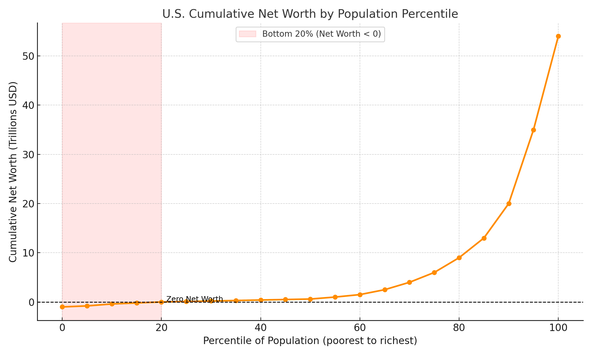

The Capture of Words and Time
Hijacked labels, the tribunal of history, and statistical rhetoric
The word “liberal” once picked out a definite philosophy. From Locke and Mill through Hayek and Friedman, liberalism meant a commitment to individual autonomy, property rights, free expression, and the rule of law — the primacy of voluntary association over state coercion. In Canada and the United States today, the same word names something close to the opposite: a politics of collectivist solutions, aggressive government intervention, identity-driven social engineering, and coercive redistribution. A philosophy of limited government now shares its name with the program of expanding it. The word was not lost through innocent drift. It was taken.
That theft is a small thing in itself — one label among thousands — but it is a clean specimen of a general strategy. The previous chapter examined labels engineered as weapons: the motte-and-bailey term that oscillates between a defensible core and an expansive accusation, and the shibboleth that tests membership rather than describing the world (Weaponized Labels). This chapter follows the same strategy onto larger territory. Capture does not begin with institutions; it begins with vocabulary. Before a faction can win the argument, it moves to own the terms in which the argument must be conducted — the labels, then the past and future those labels are judged against, then the numbers that pass for evidence. Words, time, and statistics: three territories, one campaign.
The Hijacked Label
Consider what the capture of “liberal” actually buys its captors. Three things, and none of them is accidental.
First, philosophical obscurity. The clear distinction between liberalism’s core commitments and the statist orientation of contemporary progressivism gets muddied when a single word straddles both. A politician can invoke the prestige of liberty while proposing its curtailment, and the contradiction never surfaces, because the vocabulary has been arranged so that it cannot be stated. Substantive debate about the legitimate scope of government becomes difficult when the position that government should be limited no longer has an unambiguous name.
Second, historical misappropriation. By wearing the liberal mantle, progressives inherit a legacy they did not build and would not honor. The public comes to associate the label’s new owners with the achievements of its old ones — the case against censorship, the case for free markets, the long fight to subordinate power to law — even though the thinkers who won those fights would explicitly reject the methods now advanced under their banner. The brand is retained; the product is replaced.
Third — and this is the strategic prize — the capture allows authentic liberals to be branded as something else. If “liberal” now means the progressive program, then anyone defending individual autonomy, property, and limited government against that program must be “right-wing,” reactionary, an enemy of the very tradition he is upholding. The Overton window shifts not because anyone changed their mind but because the signposts were moved. Positions that were the liberal center for two centuries become the suspect fringe by redefinition alone.
The remedy is precision and persistence: say “classical liberal,” “libertarian,” or “voluntaryist” where the plain word has been poisoned, and keep pointing out the theft. I have made the general case for that kind of definitional hygiene elsewhere (words that lost their teeth); I will not repeat it here. The point of the specimen is what it reveals about the strategy. A label is a small territory, quickly seized and cheaply held. The more ambitious captures aim at something larger. They aim at time itself.
The Tribunal That Does Not Exist
Few expressions betray a lack of substantive reasoning more reliably than “the right side of history.” It is rhetorical theatre: a performance in which the speaker claims moral endorsement from a future that does not yet exist. The phrase substitutes the gravitas of argument with the illusion of inevitability, and it grants the speaker an unearned aura of prophetic wisdom — as though he had already read the verdict and were merely announcing it early.
This is not just an error in reasoning; it is an act of narrative control. Where the hijacked label captures a word, this move captures the future — it seeks to shape the present by colonizing the imagined moral consensus of generations who have not been born and cannot object to the use being made of them.
Unpack the phrase and four presuppositions fall out, every one of them faulty.
- That history possesses an inherent moral trajectory — as though the universe itself enforced progress toward justice. It does not. Whatever moral progress occurs is made by agents, against resistance, and can be unmade.
- That this trajectory is stable and discernible — and, conveniently, aligned with the speaker’s current convictions. The people most certain about where history is heading have an odd habit of discovering that it is heading exactly where they were already going.
- That moral judgment advances in a straight line — rather than staggering through reversals, disasters, and regressions, which is what the record actually shows.
- That future consensus is automatically correct — ignoring the possibility that it may be shaped by ignorance, coercion, or sheer accident. A verdict is not validated by the date on which it is rendered.
These are not truths; they are comforting myths, clung to by those who would rather invoke inevitability than construct an argument.
And history itself supplies the refutation, in the form of a catalogue of positions once held with exactly this confidence. Eugenics was championed as the pinnacle of enlightened science — by the progressive vanguard of its day — and is now rightly condemned as pseudoscientific cruelty. Prohibition was proclaimed a moral safeguard for society and abandoned as an unworkable, corrupting failure. Colonialism was framed as a benevolent civilizing mission and is now recognized as an engine of exploitation. Segregation was defended as the natural order until it collapsed under its own moral bankruptcy. The post-9/11 security state was sold as essential to the preservation of freedom and stands exposed as an erosion of it. Each of these was, in its moment, heralded as the right side of history. Each is now a cautionary monument to the hubris of claiming to know posterity’s verdict.
The deep problem is that the phrase appeals to an authority that does not exist. There is no tribunal of the future. There is no chamber in which posterity convenes, weighs our controversies, and issues a unified ruling that the speaker has somehow been permitted to read in advance. Future generations will disagree with each other as thoroughly as we do; and to the extent they do converge, their consensus may itself be flawed or destructive, shaped by contingency, shifting power, and accidents of culture and technology. To assume that time alone purifies moral judgment is to misunderstand both history and human nature.
What the phrase lacks in evidential force it supplies in coercive force. It enforces a binary: align with the righteous future, or accept relegation to moral infamy. It does not seek to persuade but to compel — a form of reputational blackmail in which the threatened punishment is posthumous condemnation, administered by a court that will never sit. In a pluralistic society, where moral knowledge advances through debate rather than decree, this framing is not merely lazy. It is dangerous, because it works.
The Warning Signal
Here is the reframe that makes the phrase useful. Its greatest value lies not in anything it asserts — it asserts nothing checkable — but in what it signals. “The right side of history” is a tell. It announces that the speaker has substituted inevitability for argument: a preference for rhetorical destiny over demonstrable reasoning, for imagined authority over genuine persuasion. Treat it the way you would treat any other warning light. It does not tell you the conclusion is false; plenty of true conclusions have been defended badly. It tells you that no argument is currently on the table, and that the speaker is hoping you will not notice.
The response protocol is straightforward. Insist on a substantive argument grounded in evidence — the claim must stand on what can be shown now, not on what will allegedly be believed later. Examine any historical parallels on offer, testing them for accuracy and relevance rather than accepting them as incantation. Ask whose history, whose moral framework, and whose values are being invoked — the phrase always smuggles in a particular trajectory as though it were the only one. And keep squarely in view the possibility that future consensus, should it ever arrive, may simply be wrong.
When someone declares their place on the right side of history, remember what is actually happening: they are not conversing with the future — they are attempting to conscript it. And the proper response to conscription is not reverence but resistance.
Captured Numbers
The third territory is arithmetic. Words can be redefined and the future can be ventriloquized, but numbers carry an aura of objectivity that makes them the most valuable capture of all — a statistic feels like a fact even when it functions as a slogan.
Take the stock comparison of inequality rhetoric, deployed for years by Bernie Sanders and repeated endlessly downstream of him: Elon Musk owns more wealth than the bottom half of Americans combined. The move is always the same — set a very large positive net worth against the aggregate wealth of a low percentile group, and let the disparity sound morally damning on its own.
The comparison survives on one fact that its users never mention: in the United States, the bottom 20 percent of the population has negative aggregate net worth. For that segment taken as a whole, debts — student loans, mortgages, consumer credit — exceed assets. The cumulative distribution makes the artifact visible at a glance:

Follow the curve. It begins underwater, surfaces around the 20th percentile, and crawls along near zero for the next several deciles before rocketing upward at the far right. Which means that anyone with a positive net worth — a solvent barista, a debt-free college graduate with a thousand dollars in savings — “owns more than the bottom 20 percent of Americans combined.” The statement is true of tens of millions of unremarkable people, because the group being summed nets out below zero. A comparison that anyone can win is not a measure of anything.
Now apply the consistency test — the same instrument that dismantles so much statistical rhetoric. Turn the metric on its own promoters. Sanders has an estimated personal net worth of two to three million dollars, placing him comfortably in the top few percent of American households. By his own chosen yardstick, he owns more wealth than the bottom 20 percent of the country combined — more than tens of millions of his fellow citizens taken together — in precisely the way he presents as damning when the name attached is Musk. If the comparison indicts Musk, it indicts Sanders. If Sanders rejects the application to himself — and of course he must — then he concedes that the comparison was never a valid measure of injustice in the first place. Either way the rhetoric collapses. The reversal is not a gotcha about one senator’s finances; it is a proof about the metric. A statistic that indicts its own wielder the moment it is applied consistently was never doing statistical work. It was doing theatrical work.
There is a substantive error underneath the theatrical one. Negative net worth in a wealthy economy is not a portrait of destitution. The bottom of the net-worth distribution is heavily populated by people in the leveraged phase of prosperous lives: the medical resident with six figures of student debt and seven figures of expected earnings, the young family whose mortgage temporarily swamps its equity. Their debts are claims they chose against futures they expect — access to credit is itself a form of wealth that the snapshot records as its opposite. The bottom of the net-worth distribution is simply not the bottom of the well-being distribution, and a rhetoric that conflates the two is not measuring deprivation; it is manufacturing it.
Whether inequality as such is ever a harm — as opposed to the coercion, fraud, or agency-destroying policy that sometimes produces it — is a substantive question I take up elsewhere: the economics in wealth is not a pile, the political principle in agency, not equality, and the moral psychology that keeps the confusion in business in against envy. Here the point is narrower and purely diagnostic: the comparison is misleading on its own terms, before any of those arguments is even needed. Like the hijacked label and the invoked tribunal, it is rhetoric wearing the costume of measurement.
The Common Move
Set the three specimens side by side and the shared mechanism is plain. Each one relocates the argument to territory the listener cannot inspect. The hijacked label smuggles conclusions through connotation: accept the word and you have accepted a verdict you never examined. The captured future smuggles them through prophecy: the evidence is lodged with a tribunal that will never convene. The captured number smuggles them through arithmetic: the sum is real, but what it purports to measure is not there. In every case the tell is the same — the crucial step of the argument happens somewhere you cannot follow it.
And so the defense is the same in every case: drag the claim back into inspectable territory. Ask what the word meant before it was taken, and use a more precise one. Ask what the evidence is now, since the future has no spokesman. Ask what the number actually measures, and whether its wielder would accept it pointed at himself. None of this requires unusual intelligence — only the refusal to let the terms of the argument be dictated by the party with the most to gain from their corruption. Vocabulary is the first territory captured because it is the cheapest to hold and the most valuable to own. It should be defended accordingly.